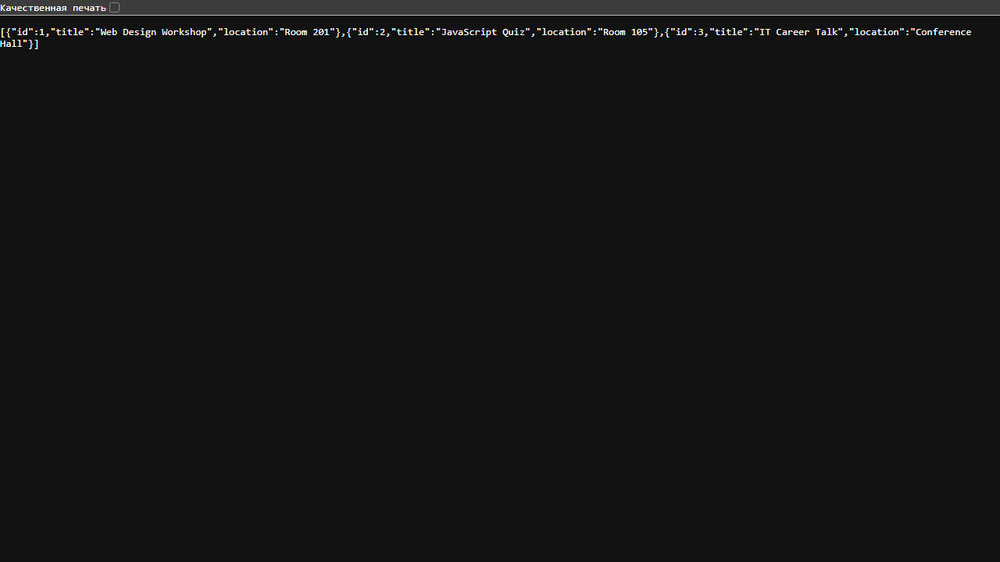
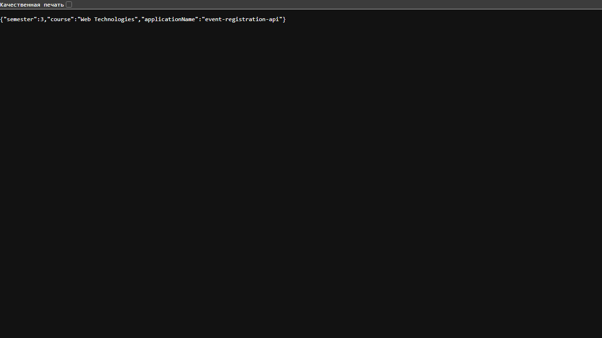
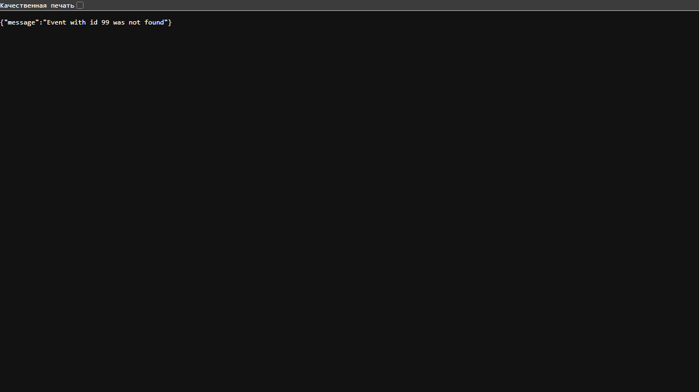

The project uses Gradle and Java 17-compatible source code. RegistrationController exposes JSON GET endpoints and delegates event data to EventService through constructor injection. EventInfo is the JSON model; the service keeps three events in memory. The /api/info response reads the application name, course, and semester from application.properties. The optional event lookup returns a clear JSON 404 response when an ID is not found.
Validation completed: Gradle tests passed, the application started on port 8080, and all required endpoints plus the missing-event response were checked in a browser and with HTTP requests.



This laboratory work introduced the structure of a small Spring Boot REST application. The controller handles HTTP requests while the service provides the welcome message and in-memory event data. Constructor-based dependency injection keeps the controller separate from service creation. The API returned JSON for the required endpoints, and the optional lookup produced a clear 404 response for an unknown event.